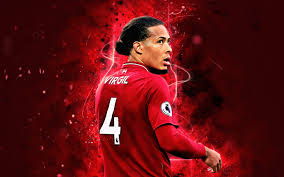
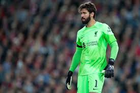
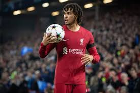
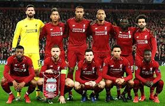
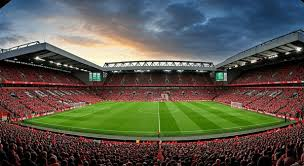

Liverpool FC
You'll Never Walk Alone
Лучшие игроки
Фото
Видео
Титулы
Лучшие игроки
  
Фото команды
 
Видео
Титулы клуба
Премьер-лига: 20 титулов
Лига чемпионов УЕФА: 6 титулов
Кубок Англии: 8
Кубок Лиги: 10
Кубок УЕФА: 3